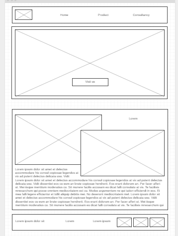
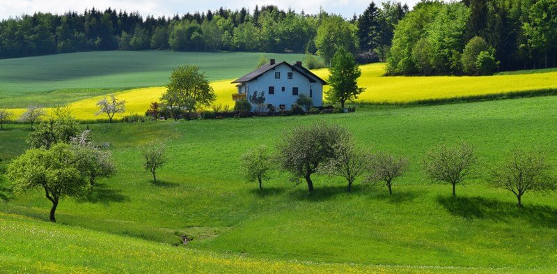
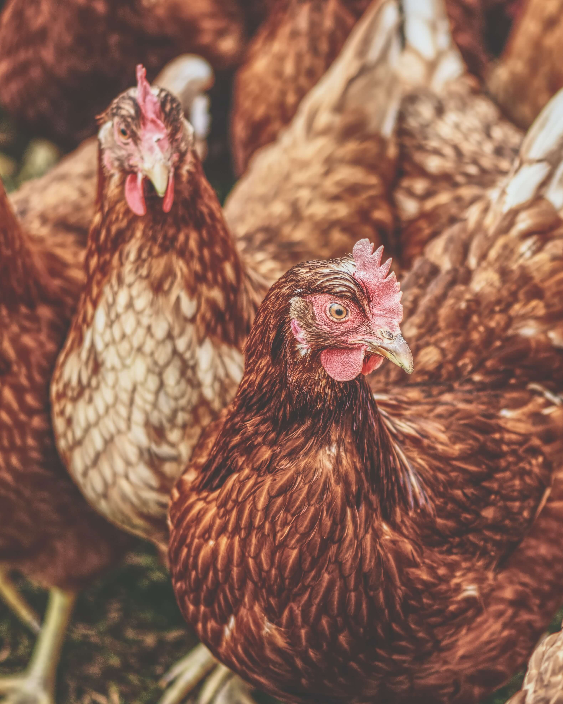
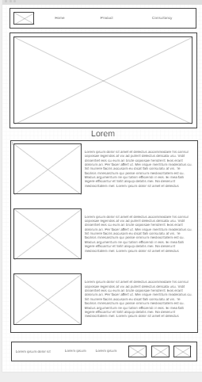
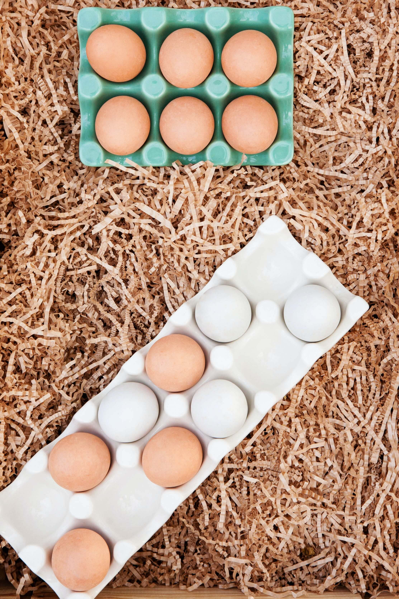
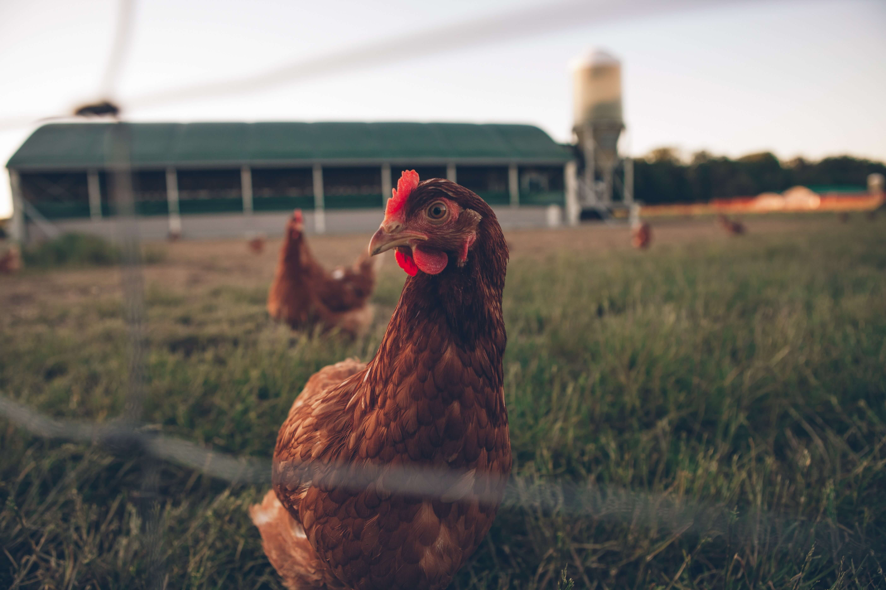
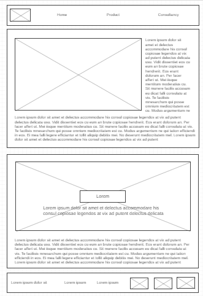
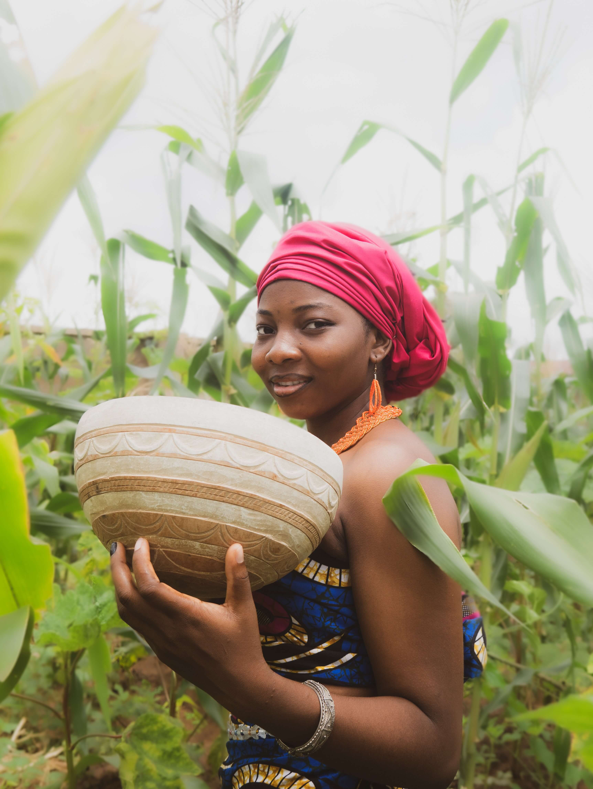
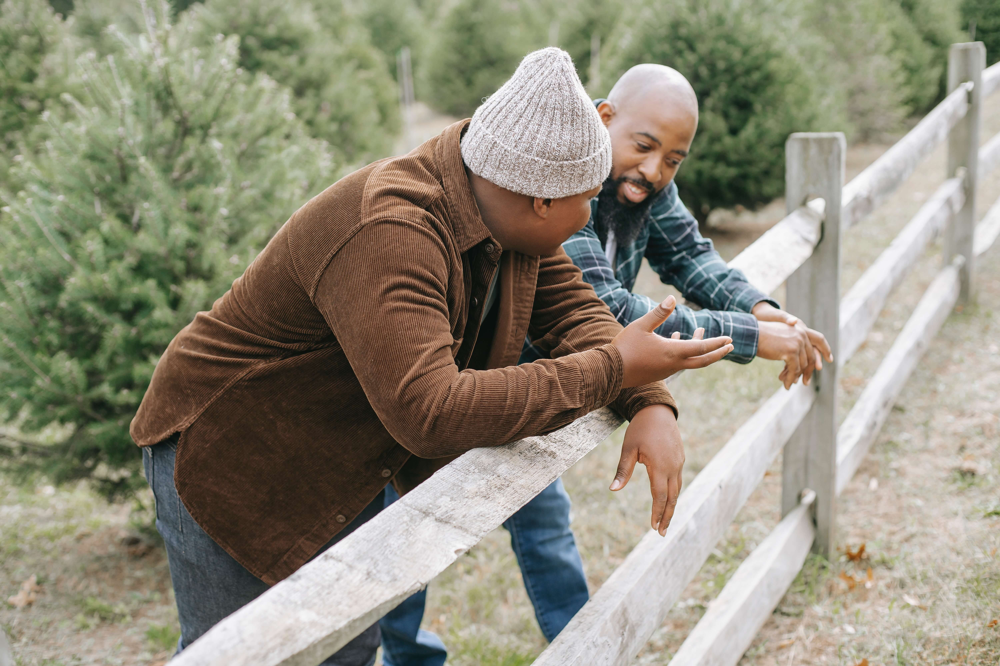

Overview
Purpose
The purpose of this website is to generate publicity for my farm, Lucid Farms. Recognizing the need to enhance our online presence and attract more customers, I have made the decision to bring my business onto the internet to drive traffic to my establishment.
Our target audience includes individuals of all age groups, with a specific emphasis on young and middle-aged adults who have internet access. Through this website, we will showcase the full range of products and services offered by Lucid Farms, enabling visitors to familiarize themselves with our offerings and understand what we are all about. Our website will be accessible to users on any internet-connected device, including, but not limited to, desktop computers, laptops, and mobile devices.
Branding
Website Logo

Style Guide
Color Palette
Palette URL:
https://coolors.co/416422-72a06a-d9d40c-819a20-e76f511| Primary | Secondary | Accent 1 | Accent 2 |
|---|---|---|---|
| #416422 | #72a06a | #d9d40c | #819a20 |
Typography
Heading Font: Oswald
Paragraph Font: Poppins
Normal paragraph example
The best Whitewater Rafting in Colorado, White Water Rafting Company offers rafting on the Colorado and Roaring Fork Rivers in Glenwood Springs. Since 1974, we have been family owned and operated, rafting the Shoshone section of Glenwood Canyon and beyond.
Colored paragraph example
Trips vary from mild and great for families, to trips exclusively for physically fit and experienced rafters. No matter what type of river adventures you are seeking, White Water Rafting Company can make it happen for you.
Navigation
Site Map
Wireframes
Home
Visitors come to my site because they are interested in agricultural produce and services. They are looking for fresh and high-quality poultry and fish products or seeking expert advice and consultations for their farming endeavors. My website offers a convenient platform where they can explore my offerings, place orders, and book consultations, all in one place. By providing easy access to agricultural products and services, my site becomes a go-to destination for individuals interested in these specific offerings. On the home page, visitors will find an introduction to Lucid Farms and its mission to provide top-notch agricultural produce and professional guidance. The page will highlight the key features and benefits of choosing Lucid Farms, emphasizing the quality and freshness of the products, as well as the expertise of the farming consultants. It will provide an overview of the different sections of the website, including the product page and consultation page, enticing visitors to explore further. The home page will also feature visually appealing images of the farm and its produce, creating a welcoming and engaging experience for visitors.\
  Product Page
The product page will be dedicated to showcasing the range of poultry and fish products available at Lucid Farms. Visitors will be able to browse through various categories of products, including different types of poultry and fish, such as layers chicken, organic eggs, or sustainably sourced catfish. Each product will have a detailed description, highlighting its quality, sourcing, and any unique characteristics. To enhance the user experience, the product page will include high-resolution images of the products. allowing visitors to visualize our produce. Clear pricing information and any available discounts or promotions will be displayed alongside each product. Visitors will also find information about the farm's commitment to ethical practices, sustainability, and animal welfare. This page will provide a seamless and intuitive ordering process, ensuring that visitors can easily navigate, select their desired products, and proceed to checkout.
  Consultation Page
The consultation page will focus on the farming consultation services offered by Lucid Farms. It will provide detailed information about the expertise and qualifications of the farming consultants, highlighting their experience and areas of specialization. Visitors will learn about the topics and areas covered during the consultations, such as livestock management, aquaculture practices, or organic farming techniques. Testimonials from previous clients will be included to showcase the success stories and the value of the consultations.
  